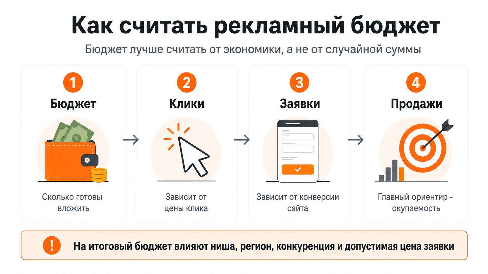

Блог о платном трафике
Сколько стоит настройка Яндекс Директ
Настройка Яндекс Директ в 2026 году обычно стоит от 15 000 до 40 000 ₽ у опытного частного специалиста. У агентств стоимость чаще начинается примерно от 30 000 ₽ и может быть значительно выше. Самые дешевые предложения на рынке начинаются с нескольких тысяч рублей.
Сам Яндекс указывает, что услуги специалистов по настройке Директа доступны от 3 000 ₽, а стоимость работы агентств определяется по договоренности. При этом в открытых предложениях на Яндекс Услугах регулярно встречается настройка примерно от 15 000 ₽.
Цена настройки - это только оплата работы специалиста. Отдельно нужен рекламный бюджет, который расходуется непосредственно в Яндекс Директе.
Сколько стоит настроить Яндекс Директ у разных исполнителей
По открытым предложениям специалистов и агентств в 2026 году ориентироваться можно примерно на такие суммы:
| Исполнитель | Ориентировочная стоимость настройки |
|---|---|
| Новичок или биржа фриланса | от 3 000 до 15 000 ₽ |
| Опытный частный специалист | примерно 15 000-40 000 ₽ |
| Агентство | примерно от 30 000 ₽ и выше |
| Большой или сложный проект | 50 000-100 000 ₽ и более |
Это не единый тариф рынка. Например, одни специалисты предлагают настройку от 15 000 ₽, другие оценивают полноценный запуск от 30 000-40 000 ₽. У агентств верхняя граница может быть существенно выше.
Поэтому сравнивать подрядчиков только по цифре в прайсе неправильно. Нужно смотреть, что именно входит в эту сумму.
Что входит в стоимость настройки
Полноценная настройка рекламы обычно начинается не с создания объявлений, а с разбора самого проекта.
В работу могут входить:
- анализ бизнеса, продукта и конкурентов;
- проверка сайта или другой посадочной страницы;
- определение рекламных направлений;
- сбор и обработка поисковых запросов;
- подготовка минус-фраз;
- настройка Поиска, РСЯ и других типов кампаний;
- создание объявлений и креативов;
- настройка Яндекс Метрики и целей;
- UTM-разметка;
- выбор стратегии и бюджета;
- настройка аудиторий и корректировок;
- проверка кампаний перед запуском;
- первоначальная оптимизация после получения статистики.
На моем сайте я отдельно выделяю анализ бизнеса, воронки, посадочной страницы, прошлой рекламы и только после этого - настройку и запуск кампаний. Это позволяет оценивать рекламу не по количеству созданных объявлений, а по тому, насколько вся связка способна приводить обращения.
Мой подход к работе и кейсы можно посмотреть на главной странице сайта.
От чего зависит цена настройки Яндекс Директ
Два проекта редко требуют одинакового объема работы.
Количество услуг и товаров
Настроить рекламу для одной услуги в одном городе проще, чем для интернет-магазина с сотнями товаров или компании с несколькими десятками направлений.
Чем больше отдельных категорий нужно рекламировать, тем больше кампаний, объявлений, посадочных страниц и данных приходится прорабатывать.
Количество регионов
Одна рекламная кампания на конкретный город и продвижение по всей России - разные по объему задачи.
В некоторых проектах регионы можно объединять. В других их приходится разделять из-за разной конкуренции, экономики или особенностей спроса.
Типы рекламных кампаний
Можно запустить только Поиск, а можно одновременно использовать Поиск, РСЯ, ретаргетинг, товарные кампании и другие форматы.
Каждый дополнительный инструмент требует отдельной настройки и последующего анализа.
Подробнее - в статье что такое РСЯ в Яндекс Директ и как она работает.
Состояние аналитики
Если Яндекс Метрика уже установлена и все основные цели корректно передаются, работы меньше.
Если приходится настраивать цели, электронную коммерцию, звонки, CRM или другие источники конверсий, объем задачи увеличивается.
Без нормальной аналитики запускать автоматическую оптимизацию на реальные обращения значительно сложнее.
Состояние сайта
Иногда проблема находится еще до рекламного кабинета. Если сайт неудобный, формы не работают, оффер непонятен или мобильная версия сделана плохо, увеличение рекламного бюджета проблему не решит.
В таком случае сначала имеет смысл исправить критические ошибки посадочной страницы. О том, как она участвует в рекламе, - в статье о лендинге в Яндекс Директе.
Рекламный бюджет не входит в цену настройки
Допустим, специалист берет за работу 30 000 ₽. Это не значит, что за 30 000 ₽ вы получите и настройку, и месяц показов рекламы.
Есть две отдельные статьи расходов:
- Работа специалиста.
- Деньги на рекламном аккаунте Яндекс Директа.
Именно со второго бюджета оплачиваются переходы и другие рекламные расходы.
Яндекс показывает бюджеты и ограничения стратегий в интерфейсе отдельно от оплаты работы подрядчика. Для автоматических стратегий системе также нужен достаточный объем данных и бюджета, чтобы получать целевые действия.
Поэтому вопрос «сколько стоит Яндекс Директ» лучше разделять на два: сколько стоит работа специалиста и сколько денег понадобится непосредственно на рекламу.
Можно ли один раз настроить Директ и больше ничего не делать
Технически можно заказать только запуск кампаний. На практике после запуска появляется статистика, которой до этого просто не существовало.
Становится видно:
- какие запросы приводят реальные обращения;
- какие объявления работают лучше;
- какие площадки РСЯ расходуют деньги без результата;
- сколько стоят конверсии;
- какие аудитории дают качественные заявки;
- хватает ли выбранной стратегии данных для обучения.
Поэтому разовая настройка и ведение рекламы - разные услуги.
Настройка создает стартовую структуру. Ведение предполагает дальнейшую оптимизацию по реальным данным.
Подробнее - в статье какую стратегию выбрать в Яндекс Директ.
Почему настройка за 5 000 ₽ и за 30 000 ₽ может отличаться
Само создание рекламной кампании сегодня технически несложное. В Директе есть автоматизированные инструменты, которые способны самостоятельно сформировать часть настроек и объявлений. Яндекс, например, предлагает «Простой старт», где достаточно указать страницу сайта, после чего система автоматически создает и запускает кампанию.
Поэтому платить специалисту только за нажатие кнопок в интерфейсе смысла мало.
Основная ценность работы находится в другом:
- понять, что именно рекламировать;
- выбрать подходящую структуру;
- корректно настроить аналитику;
- определить цели оптимизации;
- найти слабые места сайта;
- распределить бюджет;
- проверить качество трафика после запуска;
- решить, что отключать, изменять или масштабировать.
Дешевая настройка может оказаться достаточной для совсем простого проекта. Но если исполнитель предлагает одну и ту же схему для интернет-магазина, производства, онлайн-школы и локальной услуги, цена уже становится второстепенным вопросом.
Что уточнить перед заказом настройки
Перед оплатой достаточно получить от специалиста четкие ответы на несколько вопросов:
- что конкретно входит в стоимость;
- какие кампании планируется запускать;
- входит ли настройка Метрики и целей;
- кто будет делать объявления и креативы;
- анализируется ли сайт до запуска;
- входит ли оптимизация после старта;
- сколько отдельно потребуется рекламного бюджета;
- что произойдет с кампаниями после завершения настройки.
Если вам называют только цену без разбора проекта, сложно понять, за какой объем работ вы платите.
Сколько в итоге закладывать на настройку Яндекс Директ

Для небольшого проекта разумно ориентироваться примерно на 15 000-40 000 ₽ за работу опытного частного специалиста. В сложных проектах стоимость может быть выше. У агентств цена обычно начинается выше из-за команды, менеджмента и дополнительных расходов.
При этом минимальная цена сама по себе ничего не говорит о качестве, как и высокая стоимость не гарантирует хорошего результата.
Смотреть нужно на состав работ, опыт подрядчика, реальные кейсы и то, насколько глубоко специалист разбирается в вашем бизнесе до запуска рекламы.
Кейсы по нишам собраны на главной странице сайта.
Частые вопросы
Сколько стоит настройка Яндекс Директ с нуля?
На рынке встречаются предложения от нескольких тысяч рублей. По открытым прайсам 2026 года полноценная работа опытного частного специалиста чаще находится примерно в диапазоне 15 000-40 000 ₽, а агентства обычно стоят дороже.
Входит ли рекламный бюджет в стоимость настройки?
Обычно нет. Работа специалиста оплачивается отдельно, а рекламный бюджет пополняется в Яндекс Директе и расходуется на саму рекламу.
Что дороже - настройка или ведение?
Это разные услуги. Настройка чаще оплачивается один раз, а ведение - регулярно. Итоговая стоимость зависит от сложности проекта и объема дальнейшей работы.
Можно ли настроить Яндекс Директ самостоятельно?
Да. В Директе есть как обычный интерфейс настройки, так и автоматизированные инструменты для начинающих. Но ответственность за выбор целей, бюджет, качество трафика и экономику рекламы в этом случае остается на рекламодателе.